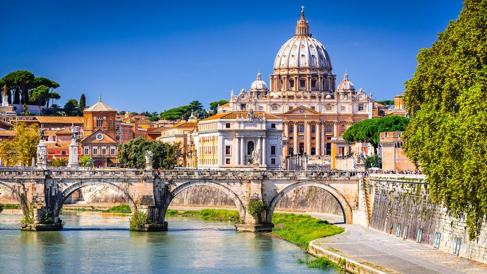

Roma, Itália
Roma, a capital da Itália, é uma cidade que respira história e cultura a cada esquina. Conhecida como a Cidade Eterna, ela oferece uma fascinante mistura de monumentos antigos, igrejas majestosas, praças vibrantes e uma gastronomia de tirar o fôlego. Com mais de 2.500 anos de história, Roma foi o centro do Império Romano e do cristianismo, sendo uma das cidades mais icônicas e visitadas do mundo. Desde o imponente Coliseu até o esplendor do Vaticano, Roma é um destino inesgotável para exploradores, amantes de arte e fãs de gastronomia.

O que fazer em Roma
-
Coliseu
O Coliseu é o símbolo mais icônico de Roma, um anfiteatro impressionante construído em 80 d.C. que sediava espetáculos de gladiadores e eventos públicos.
-
Vaticano e Basílica de São Pedro
O Vaticano, menor país do mundo e sede da Igreja Católica, abriga algumas das maiores obras-primas da arte e arquitetura. A Basílica de São Pedro é um dos edifícios religiosos mais impressionantes do mundo.
-
Fórum Romano
O Fórum Romano foi o centro político, comercial e religioso da Roma Antiga. Hoje, suas ruínas oferecem um vislumbre da grandiosidade do Império Romano. As atividades incluem caminhar entre as ruínas do Fórum, explorar o Templo de Saturno, o Arco de Tito, e o Palatino, onde, segundo a lenda, Roma foi fundada por Rômulo e Remo.
-
Fontana di Trevi
Uma das fontes mais famosas do mundo, a Fontana di Trevi é uma obra-prima do estilo barroco. Diz a tradição que, ao jogar uma moeda na fonte, você garante seu retorno à cidade.
-
Pantheon
Construído há mais de 2.000 anos, o Pantheon é um dos edifícios antigos mais bem preservados do mundo. Originalmente um templo para os deuses romanos, hoje é uma igreja dedicada a Santa Maria dos Mártires.
-
Piazza Navona
Uma das praças mais famosas e bonitas de Roma, a Piazza Navona é cercada por edifícios barrocos e abriga três fontes, incluindo a magnífica Fonte dos Quatro Rios de Bernini.
Melhor Época para Visitar
A melhor época para visitar Roma é durante a primavera (abril a junho) e o outono (setembro a outubro), quando o clima é agradável e as multidões de turistas são menores. No verão, de junho a agosto, a cidade pode ficar muito quente e cheia de turistas, enquanto o inverno, de dezembro a fevereiro, oferece uma experiência mais tranquila, mas com temperaturas mais frias. As épocas festivas, como o Natal e a Semana Santa, também são momentos especiais para visitar a cidade, especialmente o Vaticano.